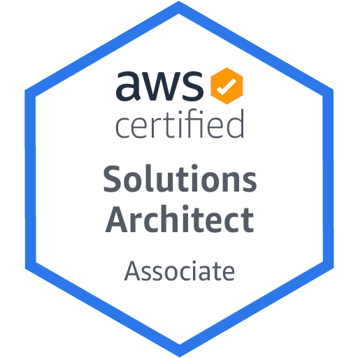
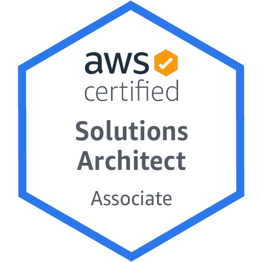

JOHN ONYEYIRI
Little Rock . Dallas, United States · (501)-908-9193 ·
johnonyeyiri@gmail.com
Hi! Welcome!
I'm Cloud Security Engineer with an interest in learning new technologies.
I have 4 years of experience in Cybersecurity and Cloud Security, which has prepared me to face the new security challenges of remote work.
I have developed a solid knowledge of cloud infrastructure in Azure and Google Cloud administration, and I’m familiar with tools such as Terraform, Git and Cisco ISE.
 
